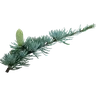

ManuscriptCorrespondence GrimoireCorrespondence Grimoire⚡Stimulant☆SaveTypeMedicalOils53Allspice Essential OilAmbrette Seed Essential OilAtlas Cedarwood Essential OilBitter Fennel Essential OilBorneol Essential OilCajeput Essential OilCamphor Essential OilCaraway Essential OilCardamom Essential OilCarrot Seed Essential OilCascarilla Bark Essential OilCassia Bark Essential OilCassia Leaf Essential OilCelery Seed Essential OilCinnamon Leaf Essential OilCitronella Essential OilClove Essential OilCommon Thyme Essential OilCostus Essential OilDill Seed Essential OilDill Weed Essential OilElemi Essential OilFir Needle Essential OilGalangal Essential OilGeranium Essential OilLemon Essential OilLongleaf Pine Essential OilMace Essential OilMastic Essential OilMay Chang Essential OilNutmeg Essential OilOrange Essential OilPatchouli Essential OilPeppermint Essential OilPetitgrain Essential OilRose Geranium Essential OilSantolina Essential OilSassafras Essential OilSavine Essential OilSchinus Molle Essential OilSilver Fir Templin Essential OilSpanish Sage Essential OilTangerine Essential OilTarragon Essential OilTexas Cedarwood Essential OilThuja Essential OilTurmeric Essential OilViolet Flower AbsoluteViolet Leaf AbsoluteVirginian Cedarwood Essential OilWest Indian Bay Essential OilWild Ginger Essential OilWormwood Essential OilShow all 53Other Correspondences2⚡Energy⚡VitalityPlants12Atlas CedarBelladonnaBetel NutCajuputCalamusCarawayCardamomCassiaSantolinaTarragonVirginian CedarWest Indian BayStimulant: an agent that quickens the physiological functions of the body.